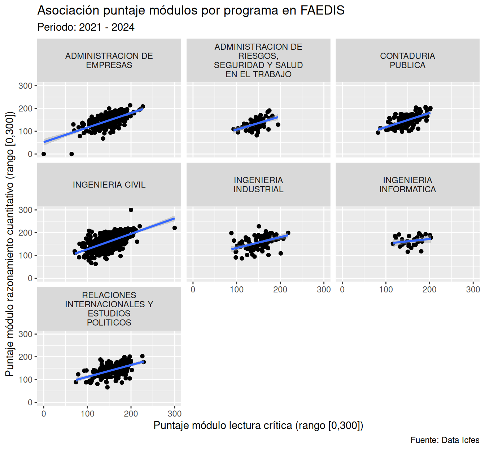
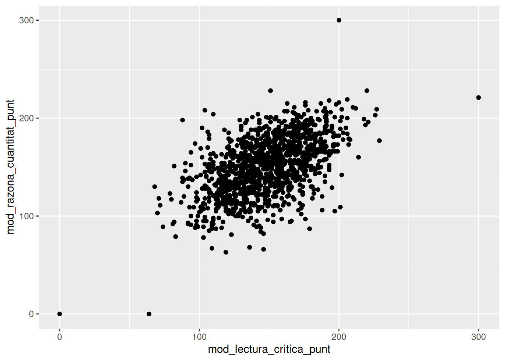
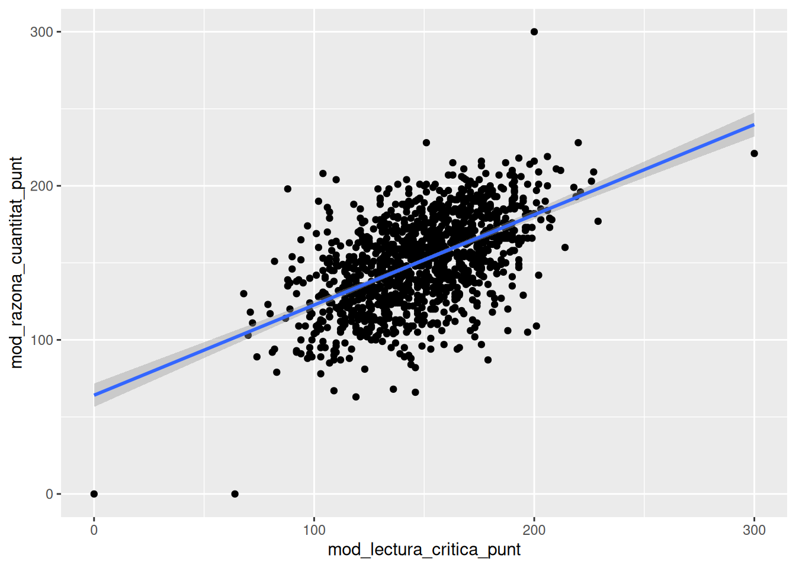
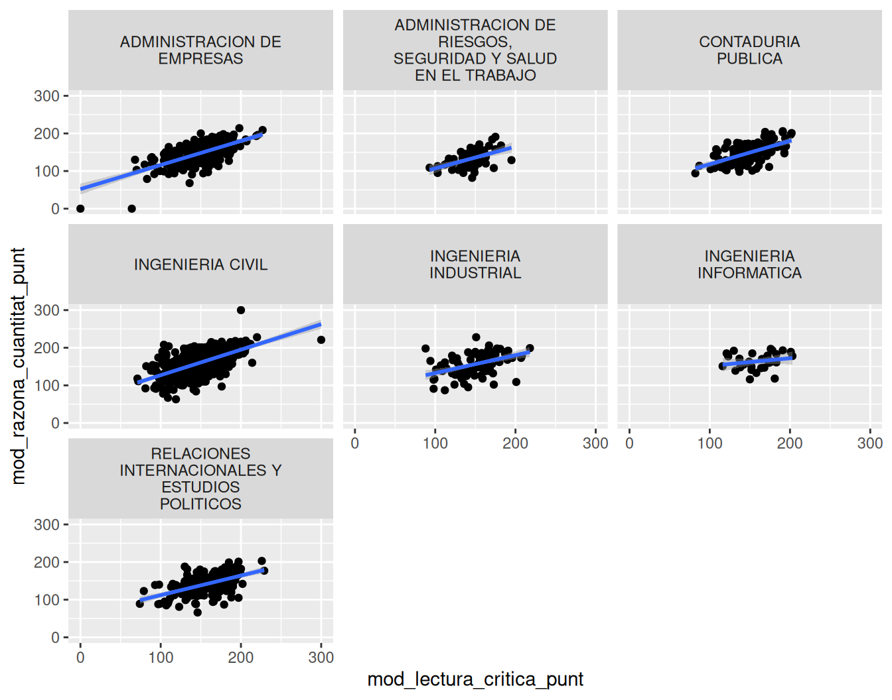
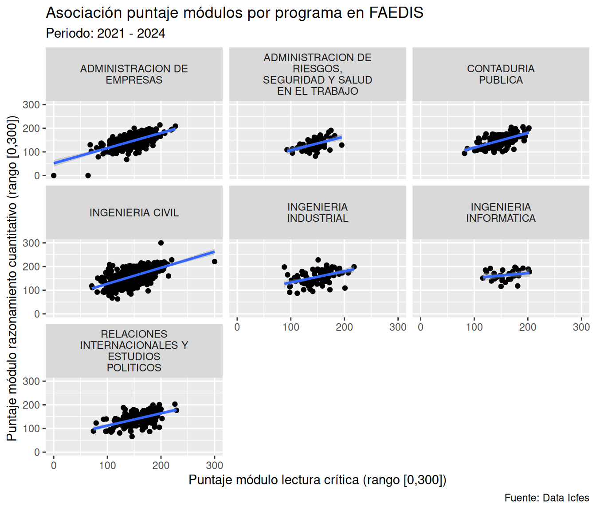
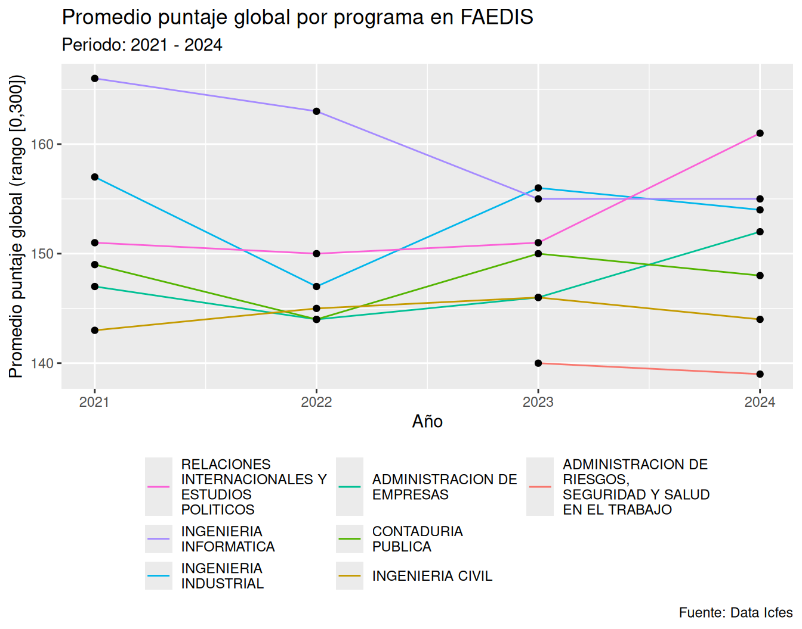

ggplot2
Este capítulo se basa en (Wickham, 2016) y (Wilke, 2019) así como en la documentación oficial de ggplot2 donde tiene como propósito utilizar el modelo mental de la gramática de gráficos en capas para visualizar asociaciones entre variables y la evolución de una variable contínua a lo largo del tiempo utilizando el paquete ggplot2 e información de los resultados del examen Saber Pro del grupo de competencias genéricas correspondientes a programas de pregrado de la Facultad de Estudios a Distancia (FAEDIS) de la Universidad Militar Nueva Granada (UMNG).
Exploraremos los siguientes aspectos:
Para desarrollar el contenido de este capítulo es necesario que hayas completado la descarga y ubicación del archivo 2021-2024_saber-pro-genericas_faedis.rds dentro de la carpeta data, respecto a lo descrito en la Nota 6.1. Adicionalmente, es necesario que descarges el archivo señalado a continuación y lo incluyas también dentro de la carpeta data:
En caso que hayas seguido estas indicaciones, procede a crear una nueva carpeta llamada 009_visualizar-relaciones-x-y-en-r y dentro de ella genera el archivo 001_visualizar-relaciones-x-y-datos-faedis.R, siguiendo las pautas de la Sección 4.4.
En esta sección realizarás un gráfico de puntos señalando la asociación del puntaje del módulo de lectura crítica con el puntaje del módulo de razonamiento cuantitativo aplicando facetas para los programas de pregrado de la Facultad de Estudios a Distancia de la Universidad Militar en el periodo 2021-2024, tal como se indica en la Figura 9.1.

ggplot2
Para generar la Figura 9.1 es necesario en primera instancia cargar los paquetes que se requieran utilizar y posteriormente importar los datos para explorarlos en R como se señala a continuación, teniendo en cuenta lo indicado en la Nota 9.2:
# Cargar paquetes ----
library(tidyverse)
# Importar datos ----
saber_pro_genericas_faedis_2021_2024 <- read_rds(
file = "data/2021-2024_saber-pro-genericas_faedis.rds"
)Una vez se carguen los paquetes que se utilizarán y se importen los datos, se pueden mapear las variables mod_lectura_critica_punt y mod_razona_cuantitat_punt a los ejes asociados con las coordenadas x y y. También se puede utilizar la función geom_point() para generar un gráfico de puntos de tal manera que se pueda visualizar la asociación entre 2 variables contínuas, como mod_lectura_critica_punt y mod_razona_cuantitat_punt:
saber_pro_genericas_faedis_2021_2024 |>
ggplot(
aes(
x = mod_lectura_critica_punt,
y = mod_razona_cuantitat_punt
)
) +
geom_point()
En un gráfico de puntos es posible superponer una recta para identificar una tendencia general en relación a la asociación de 2 variables contínuas utilizando la función geom_smooth() y el parámetro method con el argumento "lm", como method = "lm":
geom_smooth() y el método lm
saber_pro_genericas_faedis_2021_2024 |>
ggplot(
aes(
x = mod_lectura_critica_punt,
y = mod_razona_cuantitat_punt
)
) +
geom_point() +
geom_smooth(method = "lm")`geom_smooth()` using formula = 'y ~ x'
Al ejecutar el código del Listado 9.2 se genera un mensaje indicando que la geometría geom_smooth() utiliza la fórmula y ~ x (ver geom_smooth() using formula = 'y ~ x'). Internamente ggplot2, mediante la función lm(), ajusta un modelo de regresión lineal. A partir de un modelo teórico poblacional (ver Ecuación 9.1), R estima un modelo lineal (ver Ecuación 9.2) mediante el método de mínimos cuadrados ordinarios:
\[ y = \beta_0 + \beta_1x + \epsilon \tag{9.1}\]
\[ \hat{y} = \hat{\beta}_0 + \hat{\beta}_1x \tag{9.2}\]
Donde en la Ecuación 9.2 \(\hat{\beta}_0\) corresponde al corte estimado con el eje asociado a la coordenada y y \(\hat{\beta}_1\) se refiere a la pendiente de la línea estimada. En este caso particular, y corresponde a la variable mod_razona_cuantitat_punt y x corresponde a la variable mod_lectura_critica_punt.
En el libro no abarcaremos con detalle el tema de regresión lineal y modelos lineales. Sin embargo, para el lector interesado en el tema, una introducción amigable y clara se puede consultar en la lista de reproducción Linear Regression and Linear Models del canal StatQuest with Josh Starmer.
El paquete ggplot2 no almacena o guarda los parámetros estimados del modelo. En ese sentido, geom_smooth(method = "lm") calcula la recta internamente solo de forma temporal para poder dibujarla. Si deseas conocer los parámetros puedes utilizar para esta caso el siguiente código:
lm() para obtener la estimación de los parámetros en una regresión lineal simple
lm(
formula = mod_razona_cuantitat_punt ~ mod_lectura_critica_punt,
data = saber_pro_genericas_faedis_2021_2024
)En la Tabla 9.1 se señalan las estimaciones de los respectivos parámetros relacionados con la recta del gráfico generado por el Listado 9.2 mediante la función geom_smooth() y el parámetro method con el argumento "lm".
lm() en una regresión lineal simple
| Parámetro | Estimación |
|---|---|
| \(\beta_0\) | 64.10 |
| \(\beta_1\) | 0.59 |
En el gráfico generado por el Listado 9.2 la asociación entre los resultados del los módulos razonamiento cuantitativo y lectura crítica se encuentran consolidados para cada uno de los programas académicos señalando una tendencia general. Para examinar si existe algún tipo de heterogeneidad entre los programas académicos es posible utilizar el componente de facetas correspondiente a la gramática de gráficos en capas. Este componente permite visualizar el mismo gráfico generado por el Listado 9.2 pero para cada programa académico en páneles individuales utilizando la función facet_wrap(). Para utilizar ésta función se requiere definir la variable que permitirá generar los grupos para generar cada gráfico utilizando el parámetro facets y como argumento la respectiva variable dentro de la función vars(). Además como en el Listado 6.7 y el Listado 8.1 es necesario limitar el ancho de los nombres de los programas donde este aspecto también se puede modificar mediante el parámetro labeler utilizando la función label_wrap_gen(), tal como se señala a continuación:
facet_wrap() junto con el parámetro facets y la función vars() como argumento para visualizar diferentes subconjuntos de datos
saber_pro_genericas_faedis_2021_2024 |>
ggplot(
aes(
x = mod_lectura_critica_punt,
y = mod_razona_cuantitat_punt
)
) +
geom_point() +
geom_smooth(method = "lm") +
facet_wrap(
facets = vars(estu_prgm_academico),
labeller = label_wrap_gen(width = 18)
)
En el gráfico generado por el Listado 9.4 se puede identificar que la pendiente de la recta generada por la función geom_smooth() junto con el parámetro method y el argumento "lm" no es la misma cuando se examina la tendencia general para cada uno de los programas académicos. En la Tabla 9.2 se señalan las estimaciones de los respectivos parámetros para cada uno de los programas académcios relacionados con la rectas del gráfico generado por el Listado 9.4 mediante la función geom_smooth() y el parámetro method con el argumento "lm".
lm() en una regresión lineal simple por programa académico
| Programa académico | \(\beta_0\) | \(\beta_1\) |
|---|---|---|
| ADMINISTRACION DE EMPRESAS | 52.08 | 0.64 |
| CONTADURIA PUBLICA | 56.09 | 0.62 |
| INGENIERIA CIVIL | 59.20 | 0.68 |
| INGENIERIA INDUSTRIAL | 85.30 | 0.47 |
| RELACIONES INTERNACIONALES Y ESTUDIOS POLITICOS | 60.05 | 0.52 |
| INGENIERIA INFORMATICA | 131.58 | 0.20 |
| ADMINISTRACION DE RIESGOS, SEGURIDAD Y SALUD EN EL TRABAJO | 49.06 | 0.58 |
En el gráfico generado por el Listado 9.4 se pueden modificar diferentes etiquetas en el para incluir información de contexto de tal manera que sea más comprensible utilizando la función labs(), como se señala a continuación:
labs() para agregar y modificar etiquetas en un gráfico
saber_pro_genericas_faedis_2021_2024 |>
ggplot(
aes(
x = mod_lectura_critica_punt,
y = mod_razona_cuantitat_punt
)
) +
geom_point() +
geom_smooth(method = "lm") +
facet_wrap(
facets = vars(estu_prgm_academico),
labeller = label_wrap_gen(width = 18)
) +
labs(
x = "Puntaje módulo lectura crítica (rango [0,300])",
y = "Puntaje módulo razonamiento cuantitativo (rango [0,300])",
title = "Asociación puntaje módulos por programa en FAEDIS",
subtitle = "Periodo: 2021 - 2024",
caption = "Fuente: Data Icfes"
)
De esa manera con el código señalado en el Listado 9.5, es posible recrear finalmente la Figura 9.1 para ilustrar la asociación de las variables mod_lectura_critica_punt y mod_razona_cuantitat_punt correspondientes a los módulos de lectura crítica y razonamiento cuantitativo para cada uno de los programas académicos.
En esta sección realizarás un gráfico de líneas señalando la evolución a lo largo del tiempo del puntaje global promedio para los programas de pregrado de la Facultad de Estudios a Distancia de la Universidad Militar en el periodo 2021-2024, tal como se indica en la Figura 9.2.

ggplot2
Para generar la Figura 9.2 es necesario en primera instancia cargar los paquetes que se requieran utilizar y posteriormente importar los datos para explorarlos en R como se señala a continuación, teniendo en cuenta lo indicado en la Nota 9.2:
# Cargar paquetes ----
library(tidyverse)
# Importar datos ----
saber_pro_genericas_faedis_2021_2024 <- read_rds(
file = "data/2021-2024_saber-pro-genericas_faedis_programas.rds"
)